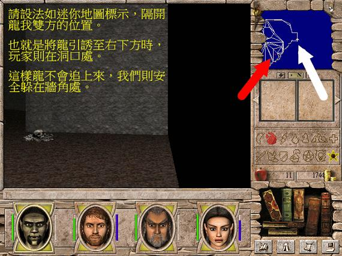
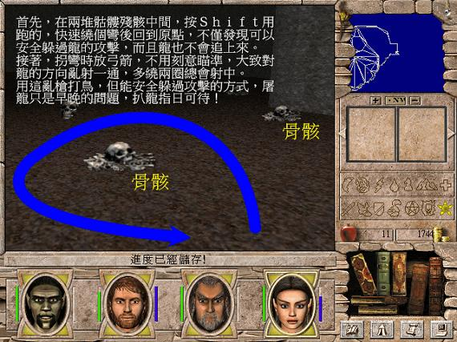
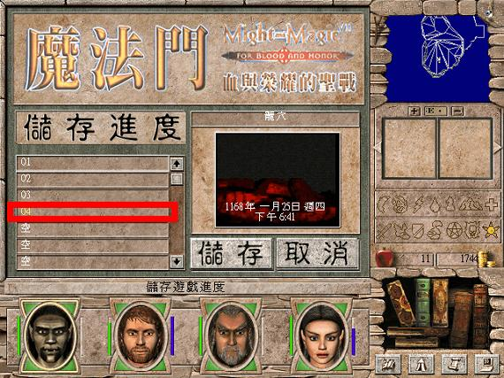
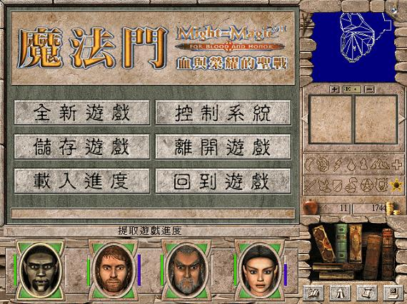
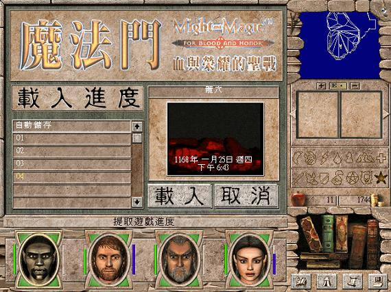

新手攻略流程
遊戲剛開始，我們什麼殺手鐧都沒有，在外只能苟且偷生，只求平安長大……這一篇，就是新手如何成長為至少有一招半式可用的攻略方式。
翡翠島
創角時，選一人幸運度 11，這樣喝過井水達幸運度 15 後，可在另一個井水撿到 1000 元。
由於打怪經驗值不多，因此引誘西北方的龍蠅讓守衛去打，我們只顧撿屍體賺錢即可。
也因為這裡撿到的裝備都沒有附加效果，因此無須鑑定，用不到的直接賣掉無所謂。
把錢全部拿來學技能，尤其每個人都要會弓箭。
利用地圖北方砲台旁的諸神之日台座提升戰力，來完成所有任務。
進訓練場提升等級，然後搭船離開翡翠島，前往和諧谷。
和諧谷
城堡外牆有寶箱可以開。
賣魔法書的宅區有口井，喝了永久提升準確度 2。
馬厩有三個馬蹄鐵，使用增加技能點數 2。馬車的木箱裡面放藥劑材料。
將體系提升至專家。
旅店旁邊有兩個增加防禦力的台座，使用後前往城堡內清除怪物，然後到旅店回報任務，並接取「修理城堡」的任務。
休息恢復戰力，接取「尋找大法師牌」任務，開始肅清野外的怪物，並點燃三個烽火。
最後進入「白崖穴」尋找紙牌，然後回報任務。
進訓練場提升等級。
週二、週四、週六坐馬車前往土拉立安。
土拉立安
撿馬厩的三個馬蹄鐵。
依個人喜好，將弓箭、風系（為了巫師之眼）、水系（為了水上飛）、解除陷阱提升至專家。
在市區地圖北方的房屋，接取「獵人升職任務」「送信給妖精王」兩個任務。
地圖西南方有增加抗火、抗風、抗水各 10 的祭壇。
接取「高等督伊德升職任務」。
坐馬車或搭船前往愛佛黎。
愛佛黎
撿馬厩的三個馬蹄鐵。
教堂附近的井水永久提升耐力 2。
接取「戰法師升職任務」。
進入丘下廳堂完成任務「獵人升職任務」，並以身上全部食物交換「仙子風笛」。兩個寶箱利用 S/L 大法開啟，開啟後有人死亡就讀取進度。
約地圖中央有座祭壇，執行「高等督伊德升職任務（三之一）」。（看是要把錢放在銀行，然後碰到祭壇後直接死回來，或者設定為保持奔跑，善用 S/L 大法多嘗試幾次逃回來。）
坐馬車或搭船前往土拉立安。
土拉立安
回報完成「送信給妖精王」任務。
週二、週四、週六搭馬車前往和諧谷。
和諧谷
進訓練場提升等級。
肅清點燃烽火後的地精軍團。
接取「尋找圖章戒指」任務。
週一、週三、週五搭馬車前往伊拉西亞。
伊拉西亞
撿馬厩的三個馬蹄鐵。
市區有口井永久增加力量 2。
接取「騎兵升職任務」以及「送信給馬克漢王任務」。
郊外聚落，有個石碑永久增加幸運 10。
清光野外的盜賊後，進入強盜窩，找出「圖章戒指」。
週一、週三、週五搭馬車前往塔塔力雅。
塔塔力雅
撿馬厩的三個馬蹄鐵。
有口水井永久增加速度 2。
將火系提升至專家。
執行「送信給馬克漢王任務」換取「帕森的鵝毛筆」。
約地圖中央有座祭壇，執行「高等督伊德升職任務（三之二）」。
找最近的距離，冒死游泳往地圖西方的離島登陸，然後進入潮穴，尋找「晨昏島的地圖」；此外這個離島的寶箱有「巨像的右手」。
週二、週四、週六搭馬車前往伊拉西亞。
伊拉西亞
回報「帕森的鵝毛筆」。
可以考慮將盾牌提升至專家。
週二、週四、週六搭馬車前往和諧谷。
和諧谷
回報「圖章戒指」任務。
進訓練場提升等級。
在地圖南方的住宅區接取「沙彌升職任務」，然後往南走前往丘陵地。
丘陵地
登上「石頭城」，地圖東邊找國王接取「拯救矮人」任務，地圖東南邊的住宅接取「清除所有穴居人」任務。
往西北邊乘升降梯進入隧道，清光所有怪物後，回報「清除所有穴居人」任務。
隊中有遊俠的話，可將斧頭提升為大師。
清光背包後，延橋往地圖東南方走，進入「七號墓室」。先分別進入「九號墓室」與「十號墓室」拿鑰匙開啟機關。二號墓室可以找到「光之油燈」，柔卡墓室可以回報「沙彌升職任務」。總共有十五號墓室。建議拿出紙筆記下來自己走過那些墓室，善用火焰光和豪氣術，看似複雜，但難度其實算低。
西南方的寶箱有「巨像的身體」。
丘陵地郊外地圖西南方有座聖殿，永久增加力量和耐力 10。
可以考慮進訓練場提升等級，然後往丘陵地地圖西方走，前往布拉卡達。
布拉卡達
在地圖南方進入巫術學校，接取「法師升職任務」。
在地圖東北方的寶箱，找到「巨像的頭部」。
撿馬厩的三個馬蹄鐵。
進入地圖東北方的「紅矮人礦坑」，執行「拯救矮人」任務，以及「戰法師升職任務」。
購買「水上飛」魔法書來學習。
往地圖東方走，前往丘陵地。
丘陵地
回報「拯救矮人」任務。
進入「鬧鬼大宅」執行「騎兵升職任務」。
前往和諧谷。
伊拉西亞
回報「騎兵升職任務」。
進訓練場提升等級。
接取「十字軍升職任務」。
進入「下水道」接取「小偷升職任務」。
搭馬車前往戴加。
戴加
撿馬厩的三個馬蹄鐵。
附近有口水井，永久增加智力 2。
附近東南方方向有祭壇，擁有增加抗土、抗心、抗體 10。
接取「祭司升職任務」，因為手上已有晨昏的地圖，請直接回報完成任務。
地圖北方偏東找「巨像右腿」，西方偏北找「巨像左腿」。
搭馬車前往伊拉西亞或土拉立安，然後週日搭船到晨昏島。
晨昏島
有座聖殿與有增加準確度和速度 10。
西方島嶼的祭壇執行「高等督伊德升職任務（三之三）」。
週一、週三、周五搭船到塔塔力雅。
塔塔力雅
執行「小偷升職任務」與「十字軍升職任務」。小偷升職任務的劍主太強，所以拿到花瓶直接逃出來。
週五搭船到愛佛黎。
愛佛黎
回報「戰法師升職任務」。
地圖西方的離島有「巨像的左手」。
搭船前往土拉立安。
土拉立安
回報「高等督伊德升職任務」。
搭馬車經由和諧谷輾轉前往土拉立安。
伊拉西亞
回報「小偷升職任務」。
搭馬車前往布拉卡達。
布拉卡達
回報「法師升職任務」。
所有成員一轉完成！
翡翠島扒龍
除了平安長大的新手攻略，另外一種就是遊戲一開始就有「殺手鐧」，讓我們往後一帆風順，見鬼殺鬼，見魔殺魔！
方法就是宰了洞穴裡面的紅龍，然後用扒龍的方式賺錢、拿裝備，這樣新手階段就不愁吃穿，裝備過人了～
所謂扒龍，就是點龍的屍體時，有一定機率屍體不會消失。因此善用 S/L 大法（Save/Load）來撿屍體，就能撿到你厭煩為止。
通常我們會花一整天時間扒龍，直到滿意為止再出發，即使你想花兩三天時間扒龍也無所謂，因為全身上下都是神器跟遺物的話，確實值得你這麼做 XDDD
最後建議要有一個認知！並不非得要穿神器與遺物不可，不少附加屬性的裝備，其實效果是很驚人的，不要介意裝備這些夠猛的東西。
最有效的屠龍技巧
最簡單的方式，就是要有兩根阿拉恐魔杖，一根向 NPC 領取，一根用 S/L 大法到商店買，沒賣就讀取進度，直到有賣為止。
進入洞穴後，要攻擊龍時按 Enter 進入「回合制戰鬥」，這時龍沒攻擊的話，就儲存進度，然後看攻擊權在誰手上，就把魔杖交給他，再發動攻擊。
如果龍發動攻擊，就讀取進度，然後開始逃，覺得時機不錯就再按 Enter，重複龍沒攻擊的話就儲存進度然後發動攻擊的步驟！
一根魔杖可以把龍打得只剩半條命，因此兩根的話剛好可以宰掉他。
硬碰硬的屠龍技巧
進入洞穴後，逆時鐘方向沿著外緣逃避龍的攻擊，當你繞啊繞回到入口處時，龍應該被你引誘至地圖約東南方位置，如圖：

躲在這個位置，是唯一龍不會追到你的安全地方。這時，看看地板，有兩堆骨骸，如圖：

依照圖的路徑，用跑的轉身射箭，就可以射到龍，但龍噴出的火不會打到你。
然後反覆「躲在安全處」→「用跑的轉身繞圈射箭」的步驟，雖然時間要很久，但龍早晚還是得躺下。
扒龍小撇步
把進度儲存在第四個欄位。

這樣載入進度時…

需要「載入的進度」就跟「載入進度的按鈕」在同一個滑鼠游標位置，直接點兩下就能載入進度。

位置喬好，就能在一個滑鼠游標位置光按滑鼠左鍵，反覆「扒龍」→「ESC」→「載入進度鈕」→「點兩下第四個進度」的動作，使得扒龍變得更順手。